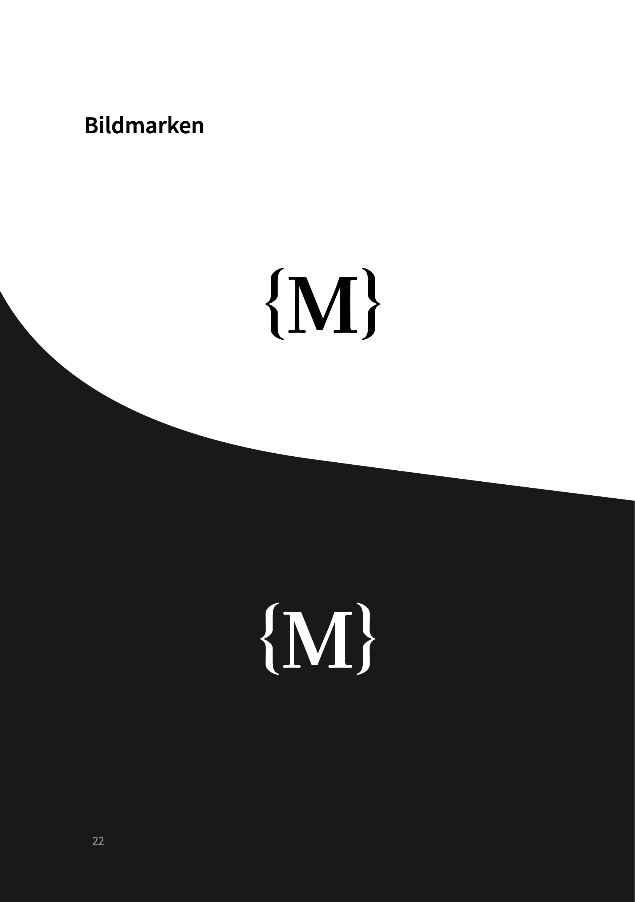
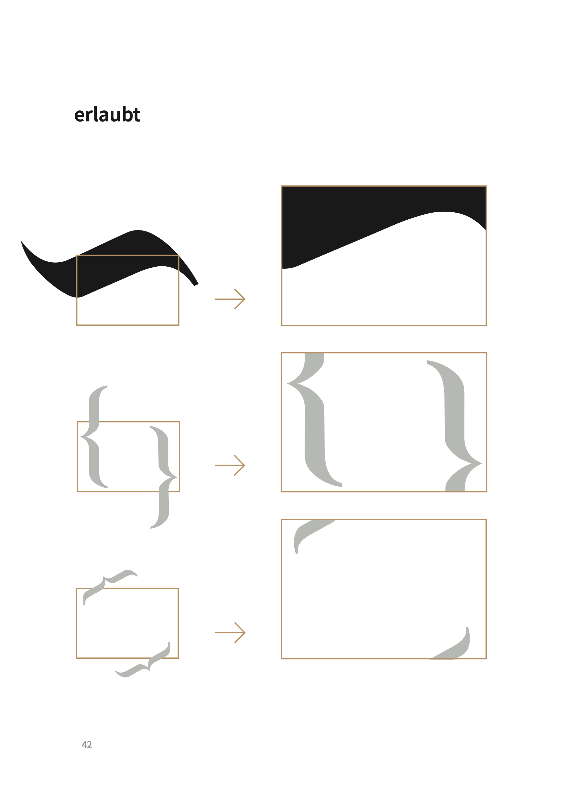
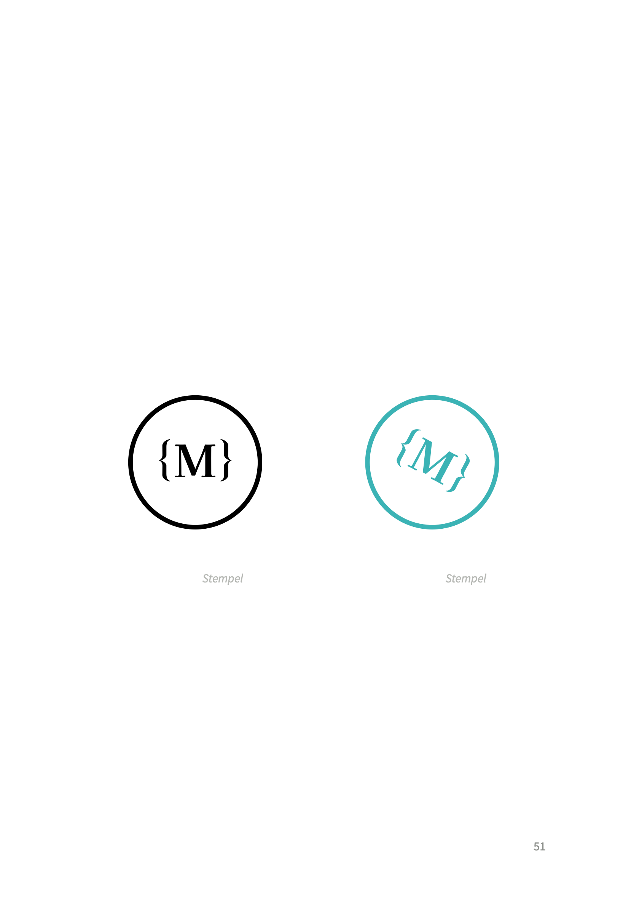
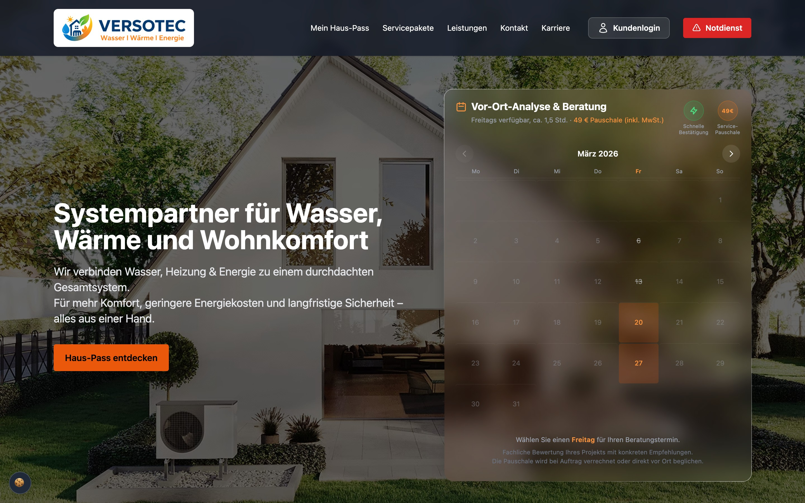

Corporate Design — Malzan MediaWorks
Im vierten Semester haben wir im Kurs Konzeption digitaler Medien (KDM) in einer Gruppenarbeit ein ganzheitliches Corporate Design für das Unternehmen Malzan MediaWorks entwickelt. Die Arbeit umfasst die Konzeption des Markenauftritts, ein modulares Logo-System mit Schutzraum- und Anwendungsregeln, Farbwelten, Typografie sowie Printmedien und einen interaktiven Web-Prototyp.
Styleguide & Markenidentität

Primärlogo — Bildmarke {M} kombiniert mit Wortmarken-Block

Sekundärlogo — Helle und dunkle Anwendungsvarianten im Vergleich

Grid & Schutzraum — Mathematische Konstruktion und Mindestabstände

Bildmarke — Standalone-Icon {M} auf hellem und dunklem Grund

Farbkonzept — Primär-, Sekundär- und Tertiärfarben mit Farbdefinitionen

Designelemente — Die geschwungene Klammer als dynamische Formensprache

Plakat-Anwendung — Markenbotschaft „Persönlich. Durchdacht. Verlässlich.“

Geschäftsausstattung — Visitenkarten-Design mit Kontur-Schnitt

Stempel — Runder Siegel-Stempel in Schwarz und Akzent-Cyan

Digitaler Auftritt — Responsive Web-Komponenten und Bildsprache